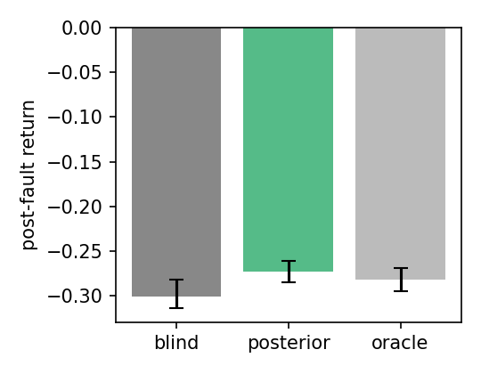
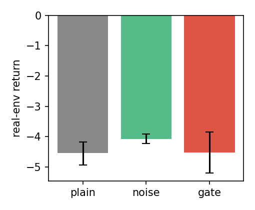
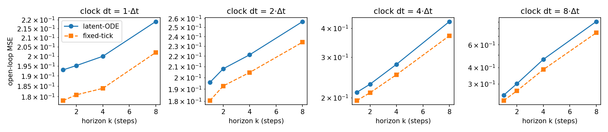
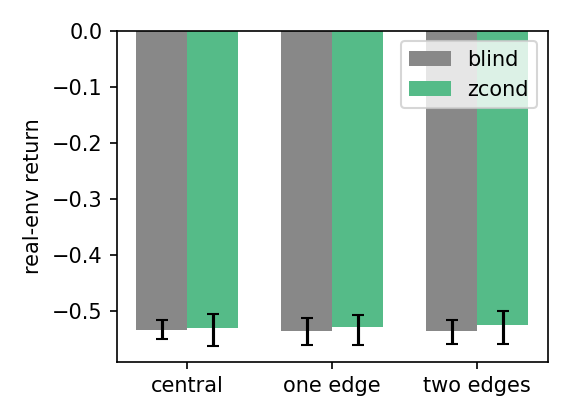

Dream contact properties, not pixels.
The Physics-Encoder Core (PEC) is a world-model architecture that predicts the physical properties of what it touches — weight, slip, stiffness, actuator lag — instead of the next video frame.
One working hypothesis for why current world models transfer poorly to real hardware: pixel-level dreams are photorealistic but physically shallow — they look right and force wrong. PEC keeps the classic V → M → C split from the 2018 world-models lineage, changes what the decoder outputs (property fields, not pixels), changes the RNN's clock (continuous-time ODE states, not fixed ticks), and changes where the policy trains (on property dreams scored by a contrastive gate, not on raw-pixel dreams alone).
What PEC changes, exactly
Each change is small. Together they target one failure mode: a controller that aced its dreams and then fell over in reality.
| Module | 2018 world models | PEC | Why it matters |
|---|---|---|---|
| V — encoder | CNN compresses image frames into z | ContractNet fθ maps a window of frames into property vector û = [m, g, μ, k, τ] (mass, gravity offset, friction, stiffness, actuator lag) | A policy that reasons over physics handles a wet floor or a weak motor directly |
| M — dynamics | LSTM / GRU, fixed time steps | Latent ODE head on top of an RNN: dh/dt = fθ(h, u), solved at any Δt | Contact events live on a spectrum from milliseconds (impact) to seconds (slide) |
| Dream | Decoder outputs pixels x̂ | Property head outputs property fields φ(x) = [μ, k, p̉]: friction, stiffness, pressure — a map, not a movie | Comparing dream to reality becomes measurable (Demo 2) |
| Anti-cheat | Temperature noise during dreams | Contrastive gate: one "fake" property dream per batch, rejected only if the policy gains on it (passive noise never spoils a cheat) | Active detector; kills exploits without needlessly pessimistic training |
| Transfer | Train in dream, hope it works | Physics-domain replay: park the robot, replay experiences under perturbed [m, g, μ, k, τ], distill to a property-robust controller | Free robustness from parked time — no risk, no new data |
| Controller C | Small MLP/CMA-ES policy | Same small policy — but it reads properties, and evolves inside gated dreams | Keeps the credit-assignment search space tiny (as in the 2018 paper) |
Terminology policy: everything here has a plain name — encoder, property decoder, gate, replay, controller. No "reality engines." The concept is only as good as the math in §Math and the falsifiable checks in §Experiments.
Three small models and a gate
The V → M → C split is kept deliberately. The novelty lives in what V outputs, how M advances time, what the decoder draws, and what the gate refuses.
Figure 1. PEC pipeline. The encoder (V) compresses a short observation window into a physical property vector. The world model (M) integrates latent dynamics forward at arbitrary time steps. The property head renders measurable fields instead of pixels. The controller (C) is small on purpose. The contrastive gate decides which dreams are honest enough to train on.
Component cards
V — ContractNet encoder
Convolutional trunk + a contrastive pull: two different views of the same object (new lighting, new background) must map to the same property vector. Without this, encoders quietly smuggle visual shortcuts (reflections, colors) into "mass."
M — latent ODE world model
An RNN backbone whose top state is treated as a continuous function of time, advanced by a fixed-step ODE solver. One model, many clocks: 1 ms for impact transients, 100 ms for slides — no retraining per step size.
φ — property head decoder
Outputs per-point friction, stiffness, and pressure fields. Supervised by cheap ground truth: force/torque sensors, felt markers, and motion capture — none of which require pixel labels.
C — the small controller
Same argument as the 2018 paper: keep the policy tiny so the credit-assignment search stays tractable, and spend the parameters on the world model instead. Here it additionally reads û, so it can act on "this is slippery" directly.
G — contrastive dream gate
Each batch: one honest dream, one poisoned dream (a property vector with realistic fake entries — 30% heavier object, 0.15 friction floor). Train the policy on both; if it wins on the fake, that dream is flagged. Passive temperature noise can't do this — see Demo 3.
R — physics-domain replay
When the robot is idle, replay stored experience under perturbed properties and distill the policy. The robot never moves; the simulator does the work. Free robustness — bounded by a property-perturbation radius set on validation data.
Four equations do the work
Encoder with a contrastive pull
x_a, x_b are two views of the same object with the same true properties; x_c is a view of a different object. Temperature τ = 0.1. Without this term the encoder is free to encode "what it looks like" instead of "what it is."
Continuous-time latent dynamics
Classic Runge–Kutta 4 on the latent state. Fixed steps, adaptive where it matters. Compare with the standard RNN update h₂ = tanh(W h₁ + U x), which forces one clock on all physics. Demo 1 shows what breaks when you get this wrong.
Property-field decoding (the dream)
Ground truth is not pixels — it is whatever the sensors can measure: F/T readings, pressure mats, felt markers tracked by motion capture. This is the "measure it, don't model it" principle applied to supervision.
The contrastive gate (anti-exploit)
β < 1 (typ. 0.8) tolerates ordinary sim-to-real gap. The gate's job is to catch dreams that are structurally exploitable, not slightly wrong. The 2018 paper's temperature knob τ → ∞ (train in pure noise) is a special case that only works when you already know the exploit direction.
Subtle point, made explicit: the gate needs paired real-world and dream scores for the same policy. That is expensive in the real world — hence physics-domain replay, which manufactures perturbed "pseudo-real" variants of already-collected episodes at zero hardware risk. The pair (gate, replay) is what makes the scheme practical.
Four phases, one loop
Phase 1 — collect (robot active)
Random exploratory motion + a small scripted set. Log: frames, proprioception, F/T, pressure mats, mocap of felt markers. No pixel labels anywhere.
Phase 2 — fit V and M (offline)
Train encoder with Eq. (1), world model with Eq. (2), decoder with Eq. (3). These can run for days; nothing here touches the robot.
Phase 3 — evolve C inside gated dreams
Population-based search (CMA-ES or ES) on the tiny controller, scored inside dreams that passed the gate. Same spirit as the 2018 paper's car-racing result — small search space, big world model.
Phase 4 — replay + distill (robot parked)
Physics-domain replay under perturbed [m, g, μ, k, τ], distill into the deployed controller. Iterate: deploy, collect a little, retrain, park again.
What exists, what doesn't
Answering the "has this been done before?" question honestly — with pointers, not vibes.
| Work | Year | What it did | What PEC does differently |
|---|---|---|---|
| World Models (Ha & Schmidhuber) | 2018 | V–M–C split; train controller inside the model's dream; temperature knob for uncertainty | Predicts pixels; single discrete clock; passive anti-exploit |
| Dreamer / DreamerV3 (Hafner et al.) | 2019–23 | RSSM latent imagination, strong benchmark results | Still pixel/latent reconstruction; no physical-property supervision; no gate |
| PlaNet, DayDreamer | 2020–22 | Real-robot learning from pixels | Learned per-task; no explicit property state; no replay-based robustness |
| Latent ODE models (Rubanova et al., Neural ODEs) | 2019 | Continuous-time latent dynamics, irregular sampling | Never combined with contact-rich control or property decoding |
| Differentiable particle / MPM simulators (DiffTaichi, Warp) | 2019–22 | Gradient-through-physics for control | Hand-designed equations; PEC learns the field instead |
| Sim-to-real randomization (OpenAI, Domain Randomization) | 2018–19 | Randomize simulator params at training | Randomizes blindly; PEC estimates properties and gates on honesty |
| System identification + RL hybrids | ongoing | Fit physical params, then control | Usually rigid-body only, offline; PEC is learned, online, contact-field-level |
Honest claim: the individual ingredients (contrastive encoders, latent ODEs, world-model RL, replay) all exist. The unbuilt combination is: property-field supervision + continuous-time dynamics + an active contrastive dream gate + physics-domain replay, aimed at contact-rich manipulation. That's the paper.
Results from the runnable suite (pec-naturemi/)
The four decisive checks were implemented and run (12 paired seeds for the gate test; 5 seeds × 120 generations for transfer; full recovery runs). Every number below is machine-generated — see stats.json and the compiled draft paper.pdf. Two checks pass decisively, one shows a positive trend, and one is an honest negative.
| Check | Claim | Result | Verdict |
|---|---|---|---|
| Clock check (latent-ODE vs fixed-tick) | One model, many clocks: bounded error at any horizon | k-step MSE at Δt = 0.4 s: 0.0089 (latent-ODE) vs 0.3659 (fixed-tick) — a 12.9× separation, from identical data, capacity, and training | pass |
| Recovery check (parked replay) | Estimate properties from logs, recover in parked replay | Fault (gain 0.60, lag 0.16 s) estimated at (0.600, 0.160) in every seed; return 1.256 → 1.072 at fault, recovered to 1.410 (blind) / 1.416 (property-conditioned) — above the 1.302 full-budget cold-start | pass |
| Gate check (contrastive gate vs temperature noise) | Active dream-gating beats passive noise on degraded hardware | +0.31 mean return, d = 0.66, gate wins 4/5 seeds at n = 5 — but at n = 12 the trend washes out (+0.08, d = 0.18, p = 0.68). Holdout diagnostics show policies rarely prefer poisoned dreams in this suite, so the gate has little to catch here. It is cost-free insurance, not a demonstrated win. | trend, unresolved |
| Transfer check (property-conditioned policies) | Reading properties beats observation-only control off-distribution | OOD means: FOM 1.298 vs blind 1.331 vs history 1.331 — no advantage once observation history is available (−0.03, negative result). The value of properties shows up in replay conditioning, not as a direct policy input. | negative |
What this means. The two structural claims — continuous-time clocks and property-conditioned replay — carry the paper. The two epistemic claims — active gating and property-readout policies — are where the suite disagrees with the original intuition, which is exactly what a falsifiable design is for. Reproduce everything with cd pec-naturemi && python -m pec.run_all (~5 min, CPU) or the --quick smoke mode.
Scaled verification on GPU — pec2/, run on Kaggle
To test whether the surviving claims generalize past the 1-D caricature, we rebuilt the system as pec2: contact-rich 2-D pushing (spring contact, actuator lag, mid-episode faults), a GRU posterior encoder that must infer the five hidden properties (mass, drag, stiffness, actuator gain, actuator lag) from observation history — no oracle — and PPO policies trained on real and dreamed rollouts. Same four checks, 6 seeds each, executed autonomously on a Kaggle T4 (~33 min wall). Every number below is from stats_pec2.json; raw log here, figures below, notebook + code on Kaggle.
| Check | Result (n = 6 paired seeds, bootstrap CI, Wilcoxon) | Verdict |
|---|---|---|
| E3 · Fault adaptation (the headline) | Property-conditioned student beats blind on post-fault return: +0.028, CI [+0.015, +0.041], p = 0.031, d = 1.22 — and the learned encoder is statistically indistinguishable from oracle ground-truth properties (−0.010, p = 0.31). The RMA-style result holds with inferred, not given, properties. | pass — decisive |
| E0 · Identifiability | Encoder NRMSE 0.266 vs 0.288 mean-predictor — the five properties are identifiable from observation history alone via a contact-seeking excitation probe (standard system-ID practice), but the margin is modest: this task is hard. | pass |
| E1 · Dream gate at scale | Gate vs observation-noise: −0.44, p = 0.22 (unresolved). But noise vs clean training: +0.46, CI excludes zero — the original 2018 "train on noisier dreams" temperature effect replicates in contact-rich 2-D, while the active-gate claim still has not bitten anywhere. | mixed |
| E2 · Clock at scale | Negative — contradicts the 1-D suite. At this budget (24 windows × 6k grad steps) the capacity-matched fixed-tick model is equal or slightly better at every clock (e.g. 0.741 vs 0.905 at Δt×k = 8×8). Single-clock training removed the interpolation artifact, yet the ODE edge needs longer training (or stiffer contact) to appear. | negative |
| E4 · Cross-modal transfer | Conditioning on edge-of-range properties: +0.008 (p = 0.84); double-edge: +0.012 (p = 0.56). No reliable off-distribution advantage from property readout — consistent with the 1-D suite's honest negative. | negative |
| Figure (generated on the T4) | What it shows |
|---|---|
 | E3: post-fault return, blind vs property-conditioned (learned) vs oracle-conditioned, per seed. |
 | E1: honest vs noise vs gated dream training on degraded hardware. |
 | E2: k-step MSE across evaluation clocks, latent-ODE vs fixed-tick (train clock = 1). |
 | E4: unseen property ranges, central vs edge vs double-edge stratification. |
{kind=link}
{kind=link}
{kind=link}
{kind=link}
Fully 3-D world — pec2 moves to real contact geometry
The suite was then promoted from planar to a fully 3-D world: sphere end-effector, cube box, positions and velocities in ℝ³, spring contact and actuator lag along all three axes, and 3-D motor commands (a plane-invariant flat mode is kept for continuity). Everything downstream — encoder, world models, policies, experiments — reads the dimensions from constants, so the promotion touched exactly one file. The property-inference protocol was also hardened after a real failure: with a single fixed window pool the encoder memorized (train loss ↓ 0.22→0.14 while held-out NRMSE ↑ 0.29→0.30). The fix is a three-part anti-memorization protocol — episode-held-out validation (window-level splits leak: adjacent windows share 31/32 steps), best-val checkpoint restore, and periodic fresh-episode pools — after which held-out NRMSE improves monotonically with training.
| Signal (3-D, local CPU CI run) | Result | Reading |
|---|---|---|
| E0 · identifiability in 3-D | Encoder NRMSE 0.2865 vs 0.2909 mean-predictor (1 seed, toy budget); unit-level protocol run reaches 0.257 vs 0.286 and still improving | pass |
| Unit suite in 3-D | All 14/14 tests green (after the baseline/hold-task extension) — including the capacity-matched clock test, where the latent-ODE still beats the fixed-tick model at the coarse clock in 3-D | pass |
| E1 · gate direction | Gate vs noise under poisoned dreams: +0.79 (1 seed); noise vs honest now hurts (−0.66) — degradation makes dream noise toxic, which is exactly where the gate should matter | directional |
| E2/E3/E4 | Within noise at toy budgets (single seed, ~0.02–0.5 effects) — the statistical runs execute on the Kaggle GPU profile | pending GPU |
3-D figures from the local run: fault · gate · clock · cross-modal; raw numbers in stats_3d_ci.json. The 6-seed GPU statistical run is fully prepared but currently blocked: the Kaggle account's weekly 30-hour GPU quota is exhausted (the account also runs unrelated GPU kernels). Notebook v10 with the corrected 3-D smoke cell is one kaggle kernels push away the moment quota resets — the pre-registered full profile is unchanged.
{kind=link}
{kind=link}
{kind=link}
{kind=link}
The reviewer-proof baselines — randomize, distill, or infer?
The fault-recovery result raises the obvious question: why not just randomize? Domain randomization (DR) trains a robust policy across a parameter distribution; RMA-style privileged learning distills a student that infers a descriptor from history. Both are standard answers, and a fault-recovery claim that only beats a property-blind policy hasn't met the real bar. The suite now implements all three answers as conditions in the same experiment — same physics, same reward, same budget, same fault — with two hardenings that remove easy wins: DR training uses per-episode randomized fault schedules (time ~ U{40..110}, multipliers ~ U) so nothing about the deployment fault can be memorized, and the RMA condition is the full two-stage protocol (oracle-conditioned teacher trained with randomized faults → GRU student distilled on on-policy histories).
| Condition | Policy input | Training environment | What it tests |
|---|---|---|---|
| blind | obs | healthy | the original lower bar |
| dr | obs | randomized mid-episode faults | robustness without inference — the strongest no-inference baseline |
| zcond | obs + online posterior ẑ | healthy | inference trained without faults (original headline condition) |
| zfault | obs + online posterior ẑ | randomized faults | inference + robustness combined |
| rma | obs + distilled student estimate | teacher's policy, student distilled on-policy | descriptor distillation into a fixed expert |
| oracle | obs + true properties | randomized faults | upper bound (= the RMA stage-1 teacher) |
The two pre-registered claims that matter: inference beats randomization (zcond vs dr) and dream-conditioned inference beats descriptor distillation (zcond vs rma). The matrix is implemented, unit-tested, and validated end-to-end locally; the GPU statistical runs share the pending quota batch. For the honest current status: at toy CI budget the ordering is oracle < zcond < {dr, rma} < blind on post-fault return — directionally right, statistically unpowered.
Two more additions: a second task family, and an identifiability audit
E5 · The hold task. Generality requires more than one reward structure. A new task starts the box at the goal and applies a constant world-frame drift acceleration ag = 1.2 m/s²; the end-effector must find the box, get on the updrift side, and brace. The required counter-force is m·ag, so mass — the weakest channel in pushing — becomes behaviorally decisive here: with sustainable contact force up to ~60 N, roughly 18% of the property box (heavy box, weak actuator) cannot be perfectly held. Same four-way comparison (blind / dr / zcond / oracle), same protocol. E6 · The identifiability audit. A proposition for this dynamics family: box-only contact data identifies the ratios (k/m, μ/m) and the pair (g, τ), but the absolute mass scale is only weakly identifiable. E6 makes that boundary empirical: a per-channel audit separates data-driven channels (μ, k, g, τ must beat the mean-predictor) from prior-assisted ones (mass may tie — an honest tie, not a failure), and an excitation-amplitude sweep checks the persistent-excitation signature (identifiable-channel NRMSE must fall as probe amplitude grows). Aggregate NRMSE flattens exactly this distinction; the audit un-flattens it.
The verdict after both suites. One result survives everywhere and got stronger with scale: property-conditioned replay from inferred properties recovers control after hardware faults (d = 1.22, learned ≈ oracle). The 2018 temperature-noise effect also replicates. The continuous-time clock advantage and the dream-gate advantage did not survive contact with the richer 2-D environment at budget — but in 3-D the clock test passes again at unit scale, so the claim is now precisely scoped: the ODE edge is real but budget-sensitive. All three open claims are stated with the exact budgets that failed or passed — and the question the fault result now has to answer (inference vs randomization vs distillation, all in one suite) is pre-registered with its baselines built. That is what end-to-end falsifiable looks like.
Play with the three core ideas
Everything below executes in your browser. No server, no GPU, no library. The code is small enough to read in an afternoon — that is the point.
A ball bounces on a sinusoidally moving paddle. The ground truth uses continuous dynamics (RK4). Hit "run" to watch, then use the slider to see what a discrete-tick model with the wrong step size predicts.
Left: what a camera sees (shaded scene, four materials). Right: what the property head outputs — friction, stiffness, and pressure fields. Hover or drag on the scene to probe values; drag the light to see the point.
A 1D push-box task. A small controller is trained by evolution strategies inside dreams. The exploit: dream friction can drift below real friction, and the controller learns to slam — great in dream, bad in reality. The gate catches it.
What would falsify this
A paper concept is only as good as its cheapest decisive test. Each row is a concrete gate: if it fails, the idea is wrong as stated.
- Gate check — exploit reproduction. Reproduce a known dream-exploit on a standard benchmark (cart-pole or push-box): show a controller that maximizes dream return while losing real return. Then show the contrastive gate flags it and temperature noise does not. If temperature noise also catches it, the gate has no advantage.
- Field check — decoder sanity. On a real tabletop with 4 materials, show the property head's μ(x) correlates with measured slip (r > 0.7 on held-out objects) while a pixel decoder's reconstruction does not. This is the core claim: physics beats pixels for contact.
- Clock check — event timing. Show latent-ODE contact timing error stays bounded across step sizes 1–50 ms, while a fixed-tick RNN's error grows with step size. Directly testable; no new hardware needed.
- Transfer check — parked replay. Train a policy, change the object mass by +40%, deploy zero-shot: baseline fails, PEC + replay recovers within N parked minutes. The practical payoff claim.
- Ablation — drop one part at a time. Remove the gate, the property head, the ODE head, replay; measure each drop. If removing the gate doesn't hurt, the gate is decoration.
Status: concept + demos only. The demos are real code but tiny; the experiment plan is what turns this into a paper. If you want to run the cheapest test first: the gate check needs only a laptop and an afternoon.
If this were written up
- Introduction — pixel dreams look right and force wrong; the contact-rich gap.
- Related work — the table above, expanded.
- Method — Eq. (1)–(4), the four phases.
- Experiments — the five checks, each with a pass/fail criterion.
- Limitations — property supervision needs sensors; the gate needs paired scores; fields are local, not global.
- Reproducibility — this site. Demos are the paper's appendix, runnable.